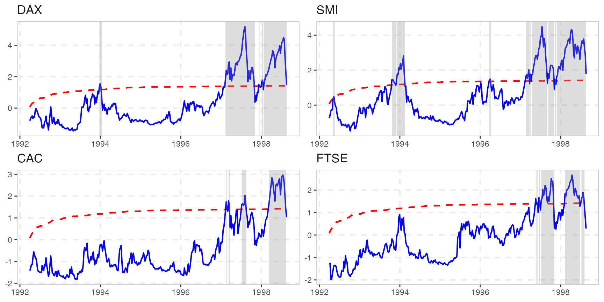
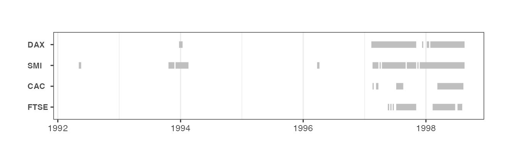

For our analysis we are going to use the datasets::EuStockMarkets dataset, which contains the daily closing prices of four major European stock indices: Germany DAX, Switzerland SMI, France CAC, and UK FTSE (see ?EuStockMarkets). The data are sampled in business time, i.e., weekends and holidays are omitted. In this particular exercise we want to focus on weekly observations. To do so we aggregate to a weekly frequency and reduce the number of observations from 1860 to 372.
stocks <- aggregate(EuStockMarkets, nfrequency = 52, mean)We estimate the above series using the recursive Augmented Dickey-Fuller test with 1 lag.
est_stocks <- radf(stocks, lag = 1)The summary will print the test statistic and the critical values for 10%, 5% and 1% significance level. The package provides simulated critical values for up to 600 observations, so we use them by omitting the cv argument in the summary function.
summary(est_stocks)
#>
#> ── Summary (minw = 38, lag = 1) ─────────────────── Monte Carlo (nrep = 2000) ──
#>
#> DAX :
#> # A tibble: 3 × 5
#> stat tstat `90` `95` `99`
#> <fct> <dbl> <dbl> <dbl> <dbl>
#> 1 adf 1.45 -0.437 -0.0900 0.511
#> 2 sadf 4.95 1.14 1.42 2.04
#> 3 gsadf 5.18 1.90 2.14 2.60
#>
#> SMI :
#> # A tibble: 3 × 5
#> stat tstat `90` `95` `99`
#> <fct> <dbl> <dbl> <dbl> <dbl>
#> 1 adf 1.77 -0.437 -0.0900 0.511
#> 2 sadf 4.28 1.14 1.42 2.04
#> 3 gsadf 4.49 1.90 2.14 2.60
#>
#> CAC :
#> # A tibble: 3 × 5
#> stat tstat `90` `95` `99`
#> <fct> <dbl> <dbl> <dbl> <dbl>
#> 1 adf 0.987 -0.437 -0.0900 0.511
#> 2 sadf 2.91 1.14 1.42 2.04
#> 3 gsadf 2.97 1.90 2.14 2.60
#>
#> FTSE :
#> # A tibble: 3 × 5
#> stat tstat `90` `95` `99`
#> <fct> <dbl> <dbl> <dbl> <dbl>
#> 1 adf 0.194 -0.437 -0.0900 0.511
#> 2 sadf 2.56 1.14 1.42 2.04
#> 3 gsadf 2.67 1.90 2.14 2.60It seems that all stocks exhibit exuberant behaviour but we can also verify it using diagnostics(). This function is particularly useful when we deal a large number of series.
diagnostics(est_stocks)
#>
#> ── Diagnostics (option = gsadf) ───────────────────────────────── Monte Carlo ──
#>
#> DAX: Rejects H0 at the 1% significance level
#> SMI: Rejects H0 at the 1% significance level
#> CAC: Rejects H0 at the 1% significance level
#> FTSE: Rejects H0 at the 1% significance levelIf we need to know the exact period of exuberance we can do so with the function datestamp(). datestamp() works in a similar manner with summary() and diagnostics(). The user still has to specify the critical values, however we can still utilize the package’s critical values by leaving the cv-argument blank.
# Minimum duration of an explosive period
rot = psy_ds(stocks) # log(n) ~ rule of thumb
dstamp_stocks <- datestamp(est_stocks, min_duration = rot)
dstamp_stocks
#>
#> ── Datestamp (min_duration = 6) ───────────────────────────────── Monte Carlo ──
#>
#> DAX :
#> Start Peak End Duration Signal Ongoing
#> 1 1997-02-10 1997-08-05 1997-11-04 38 positive FALSE
#> 2 1998-01-27 1998-07-22 1998-08-19 30 positive TRUE
#>
#> SMI :
#> Start Peak End Duration Signal Ongoing
#> 1 1993-12-02 1994-02-03 1994-02-17 11 positive FALSE
#> 2 1997-04-14 1997-07-15 1997-09-02 20 positive FALSE
#> 3 1997-09-09 1997-10-07 1997-11-04 8 positive FALSE
#> 4 1997-11-25 1998-04-07 1998-08-19 39 positive TRUE
#>
#> CAC :
#> Start Peak End Duration Signal Ongoing
#> 1 1997-07-08 1997-08-05 1997-08-19 6 positive FALSE
#> 2 1998-03-10 1998-07-15 1998-08-12 22 positive FALSE
#>
#> FTSE :
#> Start Peak End Duration Signal Ongoing
#> 1 1997-07-08 1997-10-07 1997-11-04 17 positive FALSE
#> 2 1998-02-10 1998-04-14 1998-06-24 19 positive FALSEWe can extract the datestamp as a dummy variable 1 = Exuberance, 0 = No exuberance.
The autoplot function returns a faceted ggplot2 object for all the series that reject the null hypothesis at 5% significance level.
autoplot(est_stocks)
Finally, we can plot just the periods the periods of exuberance. Plotting datestamp object is particularly useful when we have a lot of series, and we are interested to identify explosive patterns in all of them.
